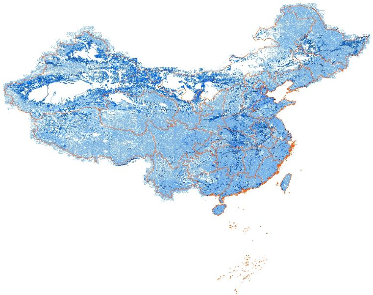
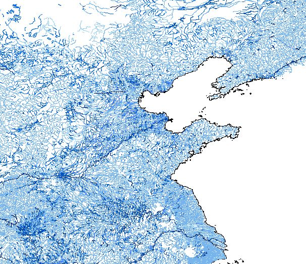
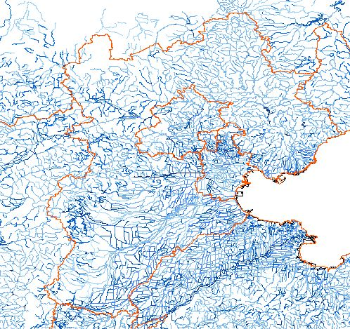
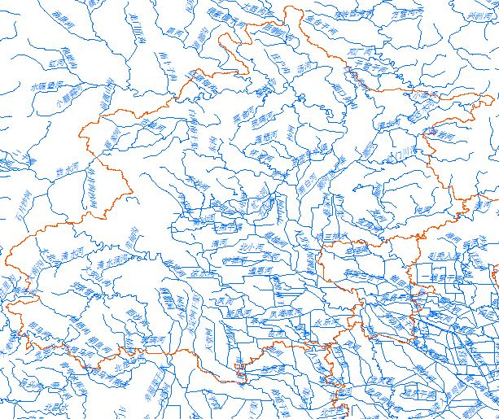

全国1:100万河流水系分布数据
National river net distribution data
数据概况
全国1:100万河流水系分布数据，数据来源于国家基础地理信息中心。
空间范围：全国（各省）
空间分辨率：（1:100万）
时间分辨率：-
数据类型：ESRI Shapefile | Polyline
投影坐标：WGS_84
生产时间：2017年
关于数据的一些说明
如果需要更精细（1:25万）的数据，可以通过新浪微博（@斩之浪）私信或邮件（gaohr@radi.ac.cn）联系。
数据预览
全国范围
华北地区


京津冀地区
北京地区


数据下载
提供全国各省数据免费下载
全国各省河流水系数据列表
| 编号 | 省级单位 | 缩略图 | 数据类型 | 下载 |
|---|
如果遇到任何数据问题，如数据下载问题、解压问题、数据投影坐标问题、文件损坏等，请在下方评论区留言，或邮件联系，我将及时答疑或更新，十分感谢您的支持~
建议使用Google浏览器，IE内核浏览器可能不正常显示下载按钮等！
Fighting, GISer!
最新博文